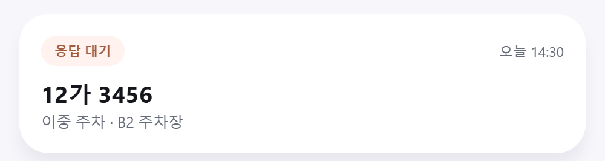
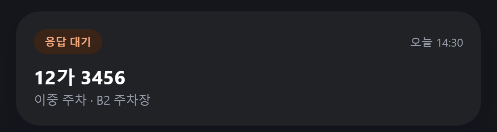
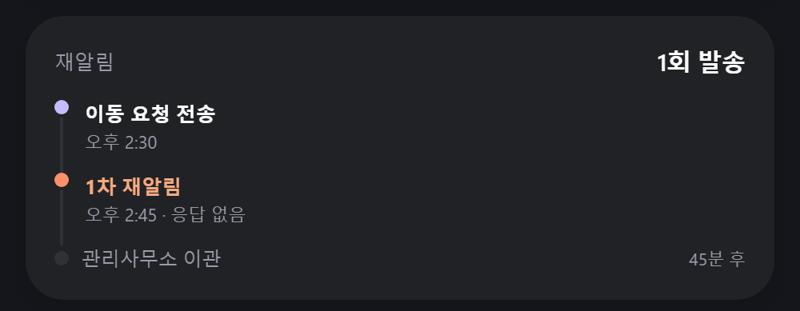

이름 하나, 값 두 벌
컴포넌트 코드는 그대로이고, 토큰이 모드에 맞는 값으로 풀린다. 다크 값은 역할마다 라이트와 같은 대비 수준을 갖도록 정했다.
라이트


다크


| 토큰 | 라이트 | 다크 | 다크 대비 (가장 불리한 배경) |
|---|---|---|---|
| text.weaker | #666b79 | #979ba8 | 5.73 |
| text.warning | #a35b3d | #f5a97f | 7.52 |
| fill.warning.weak | #fff2ef | #3a2418 | — |
| background.raised | #ffffff + 그림자 | #212225 (바탕보다 밝게) | — |